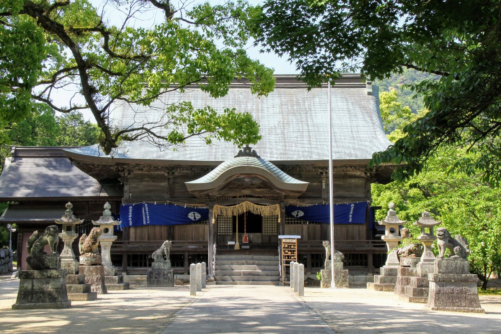

與止日女神社（Yodohime-jinja）

住所
〒840-0214
佐賀県佐賀市大和町川上1-1
旧国名
肥前国一宮
御祭神
與止日女大神（よどひめのおおかみ）
與止日女神社について
別名河上神社、俗に「淀姫さん」と呼ばれ、海幸山幸神話（うみさちやまさちしんわ）の海神の娘である豊玉姫（とよたまびめ）が淀姫とされています。
欽明天皇25年（564）の創始とされる古社で、二条天皇の応保年間（1161～63）に肥前国一宮とされました。肥前国にはもう一社一宮とされる千栗八幡宮（ちりくはちまんぐう）があり、
当社との間に一宮争いが生じ、その争いは60年続いたといわれています。
御祭神である與止日女大神（よどひめのおおかみ）は、淀姫とも、豊姫ともいわれ、豊姫は、神功皇后の三韓征伐を助けた世田姫という神と同じといわれています。
元冠の弘安の役では、神霊が蒙古の軍船を沈めたといい伝えられています。
與止日女神社は「淀姫さん」の呼び名で親しまれ、海神の娘を祀る古社です。
お祭り
『例祭』・・毎年4月18日に春季例祭、11月18日に秋季例祭（新嘗祭）が行われます。一宮らしく、氏子をはじめとする多くの参拝者で賑わっています。